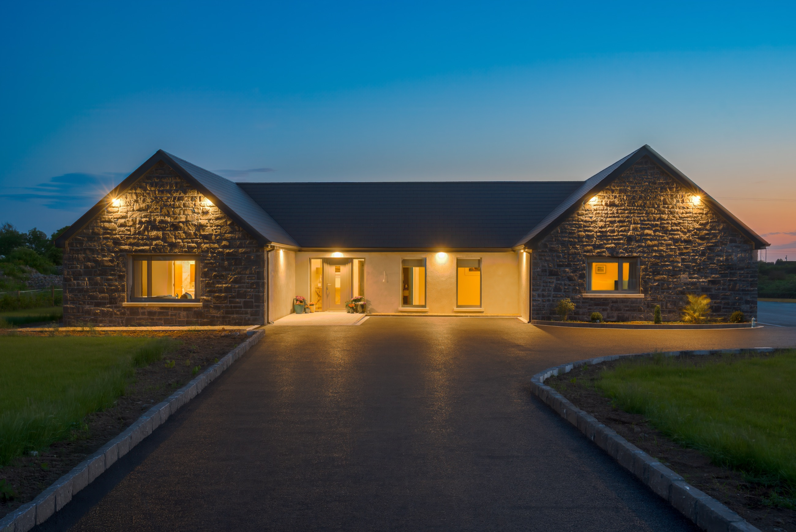
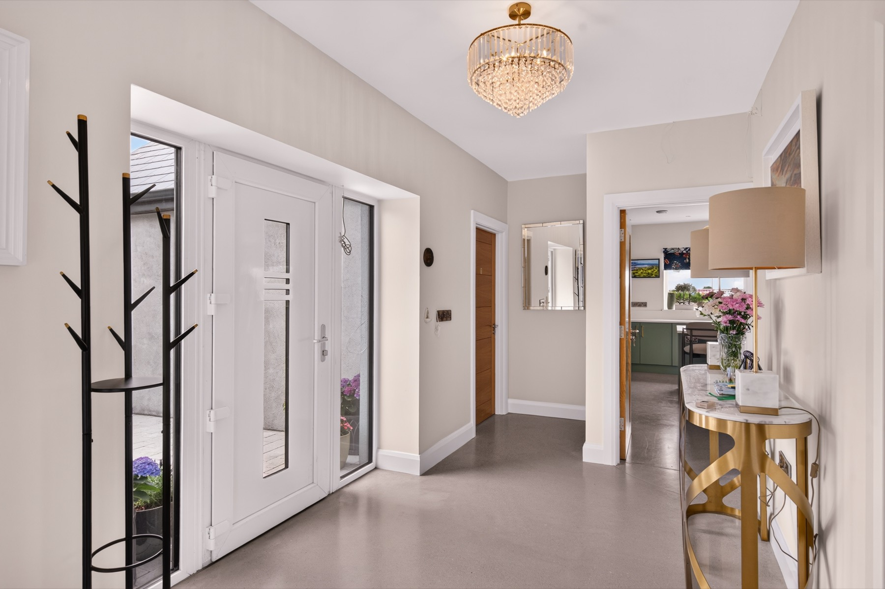
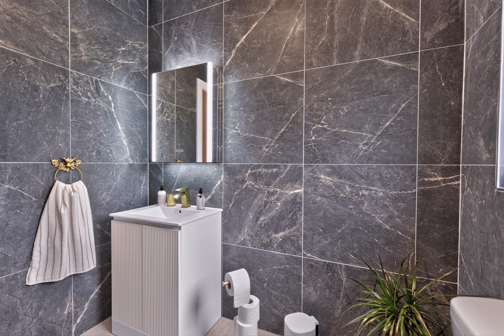
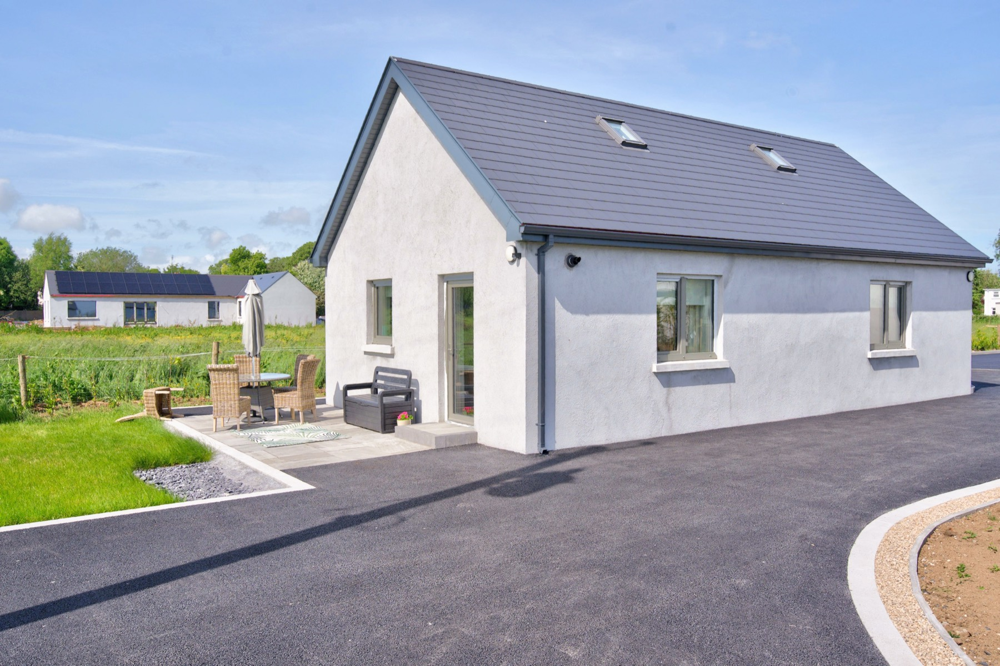
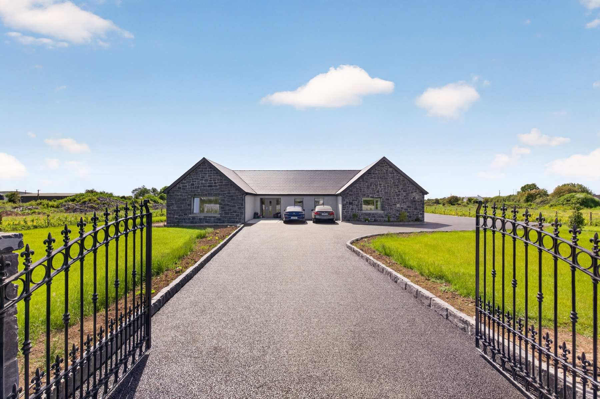

Spacious Open-Plan Living
A flowing kitchen, dining and lounge filled with light and framed by countryside views — the natural heart of the home.

Luxury Stays · Oranmore, Co. Galway
Two beautiful stays in the gardens of Oranmore — an elegant guest house and a spacious 4-bedroom apartment, finished to a five-star standard, just 15 minutes from Galway city.
Welcome to Skylark Lodge
Set in landscaped gardens on the edge of Oranmore, Skylark Lodge is a pair of brand-new luxury stays built for slow mornings and long, easy evenings. Natural stone, brass touches and soft natural light run throughout — contemporary places to stay with a warm, grounded soul.
Choose The Lodge, our elegant garden guest house for two, or The Skylark Nest, a spacious four-bedroom apartment for families and groups. Both are moments from Oranmore village and just 15 minutes from Galway city.


Why guests love it
A flowing kitchen, dining and lounge filled with light and framed by countryside views — the natural heart of the home.
Walk-in rainfall showers, marble tiling and brass details bring a quiet hotel-grade luxury to both stays.
From the Lodge's beautiful shared kitchen to the Nest's own kitchenette — everything you need for easy stays.
Sweep through your own gates to landscaped gardens, a sunny patio and total seclusion under big open skies.
Dressed beds, blackout curtains and calm, neutral tones — rooms designed for the deepest country sleep.
A warm local welcome and genuine care from your host, on hand to make your stay effortless from start to finish.
Choose your stay
Side by side in the same peaceful Oranmore gardens — pick the one that suits your trip.
Private marble ensuite rooms with premium motorised comfort beds, an exclusive guest lounge and manicured gardens. Sleeps two — ideal for couples, business stays or visiting Galway.
Sleeps 2 · Ensuite · ★5.0
Discover The Lodge
Sleek open-plan living, a fully equipped kitchenette, four restful bedrooms and a private garden with patio. Sleeps seven — perfect for families and groups, 8 minutes' walk from the village.
Sleeps 7 · 4 Bedrooms · ★5.0
Discover The Nest
The setting
Skylark Lodge sits in the peaceful countryside of Glennascaul, County Galway — surrounded by green fields and open sky, with Galway city, the village of Oranmore and the wild Atlantic coast all within an easy drive.
Exact directions and local tips are shared by Breda when you book — just call or message to plan your stay.
Explore Galway & the areaBook your stay
No booking fees, no middleman — just a friendly conversation with your host. Call or send a WhatsApp message and Breda will take care of the rest.
Friendly enquiries welcome any day · We'll reply as soon as we can